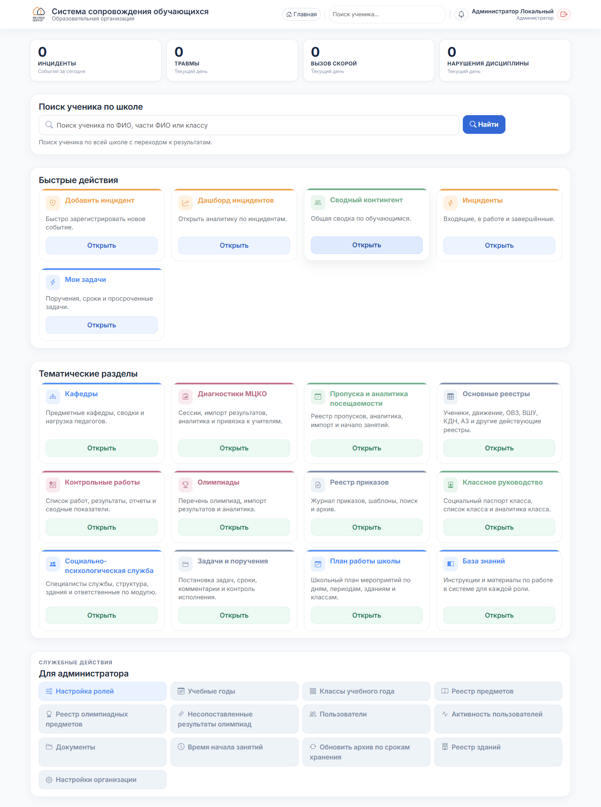
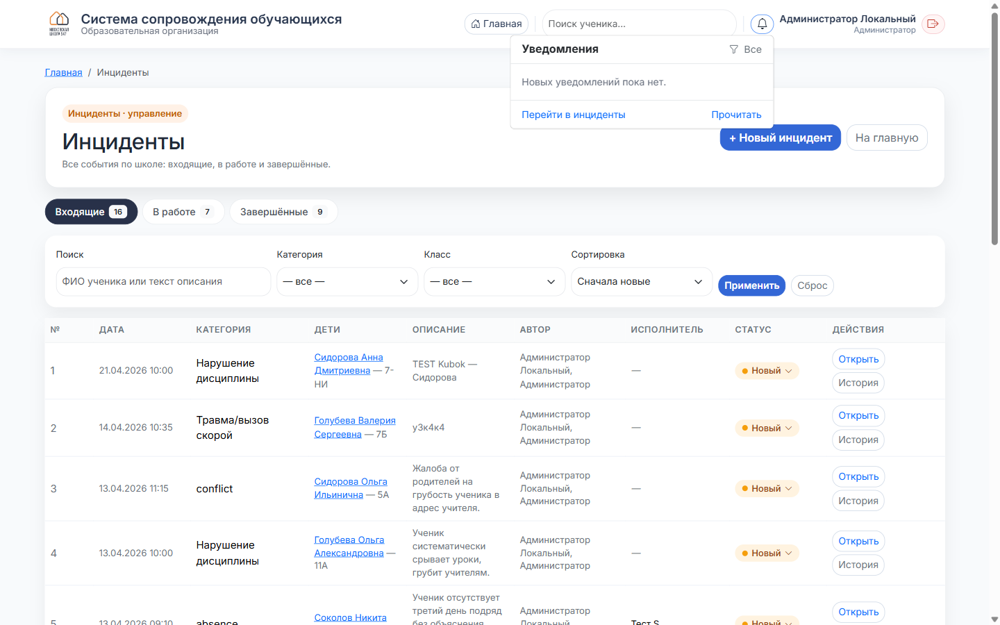

Администратор
Стартовая — знакомство с системой
Главная страница, разделы, панель администратора.
1
Где вы находитесь

После входа вы попадаете на главную. Она разбита на четыре зоны:
- Быстрая сводка (верхняя полоса) — 4 цифры по инцидентам за сегодня: всего, травмы, вызов скорой, нарушения дисциплины. Клик по карточке открывает соответствующий раздел.
- Поиск ученика — по ФИО или классу по всей школе.
- Быстрые действия — плитки частых сценариев: новый инцидент, дашборд, контингент, «Инциденты» (ваш управляющий центр по всем событиям школы), «Мои задачи».
- Тематические разделы — кафедры, диагностики МЦКО, пропуски, олимпиады, социально-психологическая служба, план работы, база знаний.
- Для администратора (нижняя панель) — служебные действия: настройка ролей, учебные годы, классы, реестр предметов, пользователи, активность, настройки организации.
2
Чем админ отличается от остальных ролей
- Вы видите всё: все инциденты школы, все задачи, весь контингент, панель «Для администратора».
- Только вы (и заместитель директора) меняете статусы инцидентов и назначаете исполнителей. Остальные роли видят инциденты и могут добавлять заметки, но flow управляете вы.
- Только у вас есть режим просмотра: можно посмотреть главную глазами другой роли (параметр
?preview_role=CLASS_TEACHER в URL).
- Только вы управляете правами ролей на страницах /admin/role-access и /admin/users.
3
Шапка и колокольчик

- Слева — логотип школы (возвращает на главную).
- По центру — кнопка «Главная», поиск ученика.
- Справа — колокольчик уведомлений с цифрой непрочитанных, плашка вашего имени и роли, кнопка выхода.
Колокольчик собирает оба потока: уведомления по инцидентам (статусы, назначения, заметки) и по задачам (новые поручения, смены исполнителя). Подробнее — в инструкции по инцидентам.
4
Основные разделы — куда идти
- Инциденты — плитка «Инциденты» на главной или прямой адрес
/incidents/my. Три вкладки: Входящие / В работе / Завершённые. Управление ходом всех заявок школы. → инструкция 02
- Дашборд инцидентов — аналитика: по категориям, зданиям, классам. Плитка «Дашборд инцидентов».
- Реестр инцидентов — полная таблица с фильтрами и экспортом в Excel. Через «Дашборд» → «Реестр».
- Задачи и поручения — плитка «Мои задачи» или
/tasks/. Канбан, список, сроки. Автоматически создаются из инцидентов при назначении исполнителя. → инструкция 03
- Пользователи — раздел «Для администратора» → «Пользователи». Создание/редактирование пользователей и смена ролей.
- Активность пользователей — кто, когда и как часто заходит. Плитка «Активность пользователей» в панели админа.
- Настройка ролей — какие разделы доступны каждой роли. Плитка «Настройка ролей».